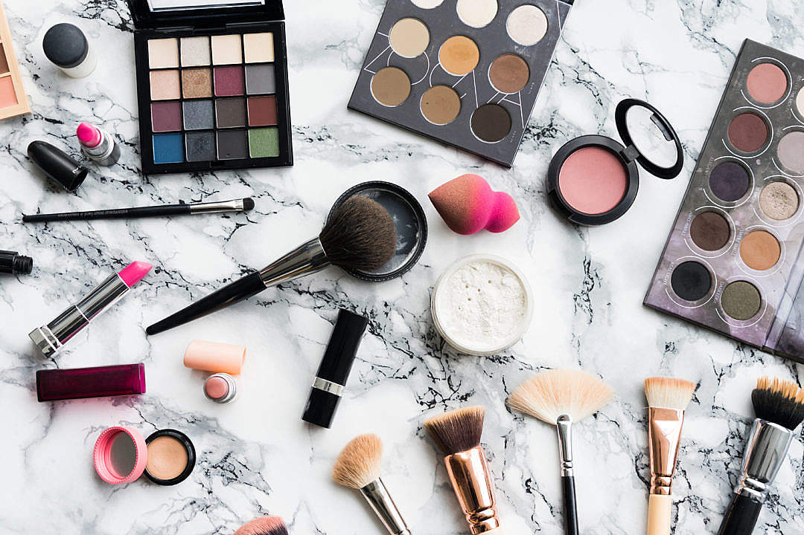
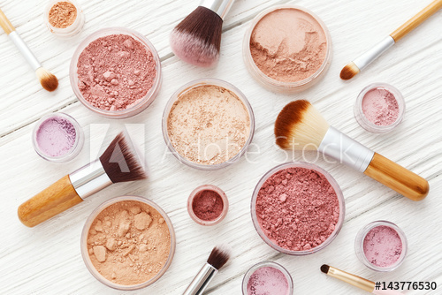

Aqui você encontra diversas dicas para a make perfeita!
- Comece aplicando um primer
- invista em um primer.
O produto é aplicado antes da base e do corretivo
e cria uma camada fina na pele, o que ajuda na aplicação e
duração da maquiagem, além de proteger a pele.
- Aposte em um BB Cream
- No cotidiano, você pode optar pelo BB Cream e deixar a
base de alta cobertura para festas.

- Invista em uma esponja de maquiagem
- É superprático para quem está começando a usar maquiagem,
pois é mais fácil de aplicar a base e o corretivo de forma uniforme com a
esponja do que com um pincel.
- Finalize com pó translúcido
- Aplicar o pó translúcido para selar qualquer maquiagem
é certeiro e combina com os mais variados tons de pele.

Início